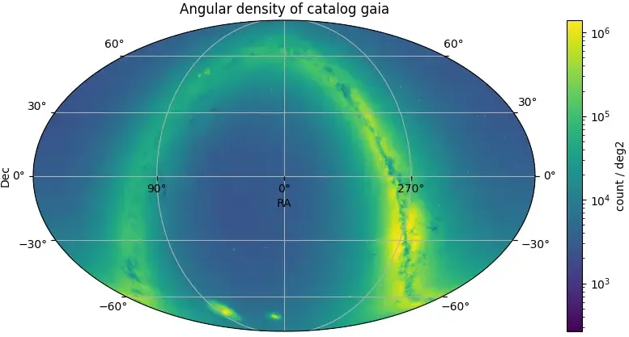
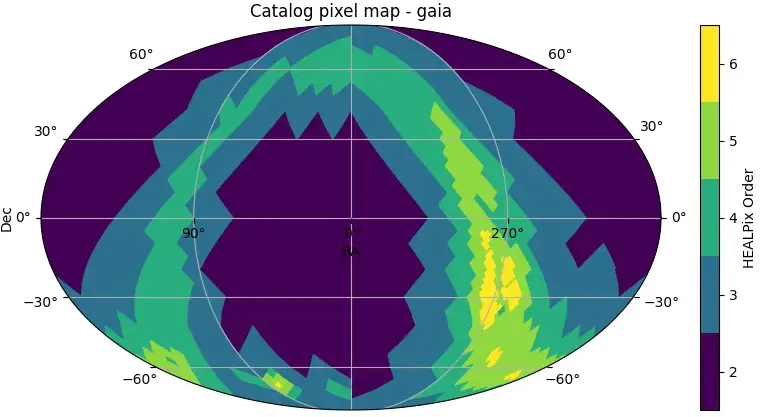

What is LSDB
A framework for spatial analysis of extremely large astronomical surveys
Designed to enable querying and crossmatching of O(1B) sources. It addresses large-scale data processing challenges, in particular those brought up by LSST.
Built on top of Dask to efficiently scale and parallelize operations across multiple workers, it leverages the HATS data format for surveys in a partitioned HEALPix (Hierarchical Equal Area isoLatitude Pixelization) structure.


Usage
Your first crossmatch
Import the package, read two catalogs and perform their crossmatch:
>>> import lsdb
# Read the Gaia DR3 object catalog
>>> gaia = lsdb.open_catalog(gaia_path)
# Read the ZTF DR22 object catalog
>>> ztf = lsdb.open_catalog(ztf_path)
# Crossmatch the two catalogs
>>> ztf.crossmatch(gaia, n_neighbors=1, radius_arcsec=1)For advanced use cases, please have a look at our tutorials.
Discover service for LSDB Surveys
data.lsdb.io
Hosted by DiRAC @ UW
The Institute for Data Intensive Research in Astrophysics & Cosmology hosts a collection of survey catalogs in HATS format. Among them are catalogs from Vera C. Rubin, Euclid, Zwicky Transient Facility, Gaia and many others. They are available to the community.